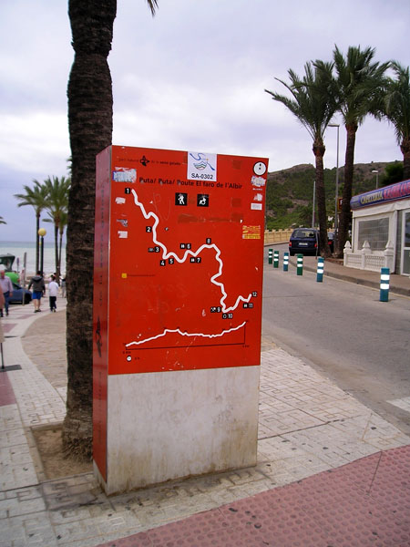
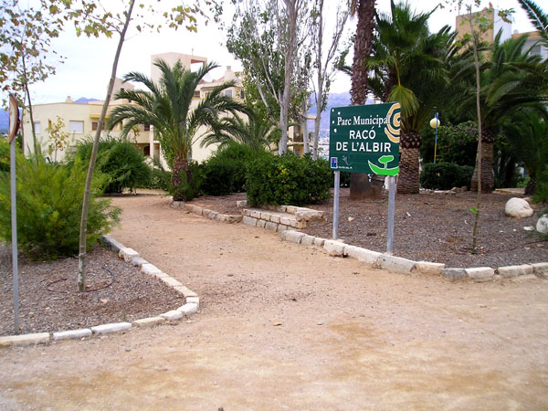
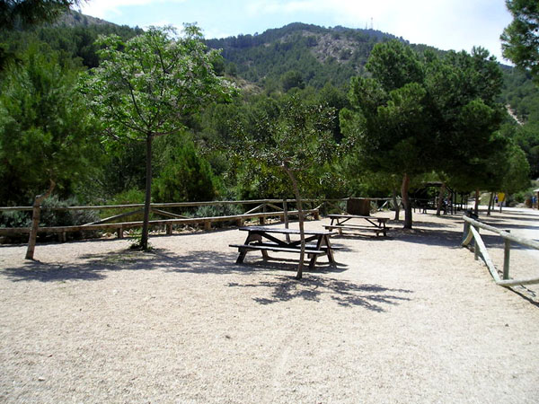
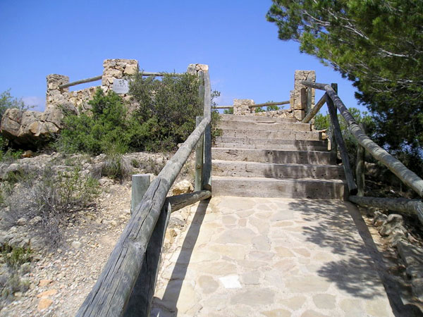
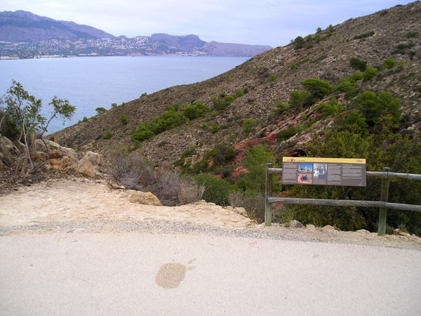

Atrás
L'Alfàs del Pi
-

Playa Bandera Azul Racó de l´Albir
-

Inicio del Sendero Azul en la Playa del Racó de l´Albir
-

Parque Racó del Albir
-

Área Recreativa del Parque Natural de la Serra Gelada
-

Mirador 1
-

Mirador 2
-

Mirador 3
-

Cova de Bou
-

Mirador 4
-

Minas de Ocre
-

Antiguo Aljibe
-

Centro de Interpretación Medioambiental del Faro de l´Albir (Centro Bandera Azul)